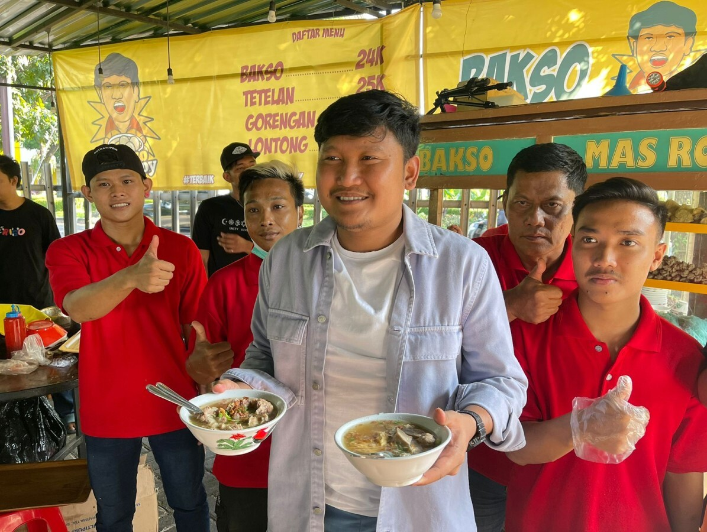

Bakso Masroy
Bakso Mas Roy hadir sebagai ikon kuliner khas Surabaya yang tak hanya menggoda selera, tetapi juga membawa misi besar. Dengan cita rasa autentik, bahan pilihan, dan pelayanan ramah, kami ingin membawa pengalaman makan bakso ke level yang lebih tinggi. Kami percaya bahwa makanan enak bisa menjadi jalan untuk menyatukan orang, membuka peluang kerja, dan memperkenalkan budaya kuliner Indonesia ke seluruh penjuru negeri. Dari Surabaya untuk Indonesia – nikmati bakso yang dibuat dengan sepenuh hati.
